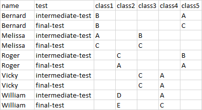
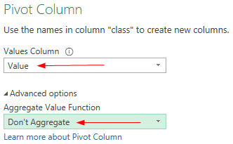

You get a more complicated form of messy data when there are variables in both rows
and columns. The example below shows the grades for a intermediate test and a final
test for five students, with each of them placed in exactly two of the five possible
classes.

The first column with the variable name is okay and should stay
that way. The headings of the last five columns are all values of the variable
class. The values in the second column,
intermediate-test and final-test, must
become individual variables with the value of the student's assessment on this
part.
File:Scores3.xlsx
Open the practice file.
Select any cell with data and choose tab Data > From Table / Range (Get & Transform Data).
The Create Table dialog box appears, in which the table
data can be specified. The data area is already filled in correctly by
default.
Make sure the option for headers is selected and click
OK.
The data on the worksheet is first converted into an Excel table. Then, in a
new window, the Power Query Editor is started that reads the data from the
table.
Select in de Power Query editor the last five columns class
until class5.
Two new columns have been created. An Attribute
column (with the values for variable class) and a
Value column with the grade. And a row is created for
each combination of name, test,
class, and grade.
Rename column Attribute in class.
Select column test and choose tab Transform > Pivot Column .
The dialog box Pivot Column is
displayed.
Choose as Values Column Value. And select Don't
Aggregate under Advanced options.

Click OK.
Choose tab Home > Close & Load (group Close) > Close & Load.
The result is a table with tidy data. Each column is one variable and each row is one
observation.